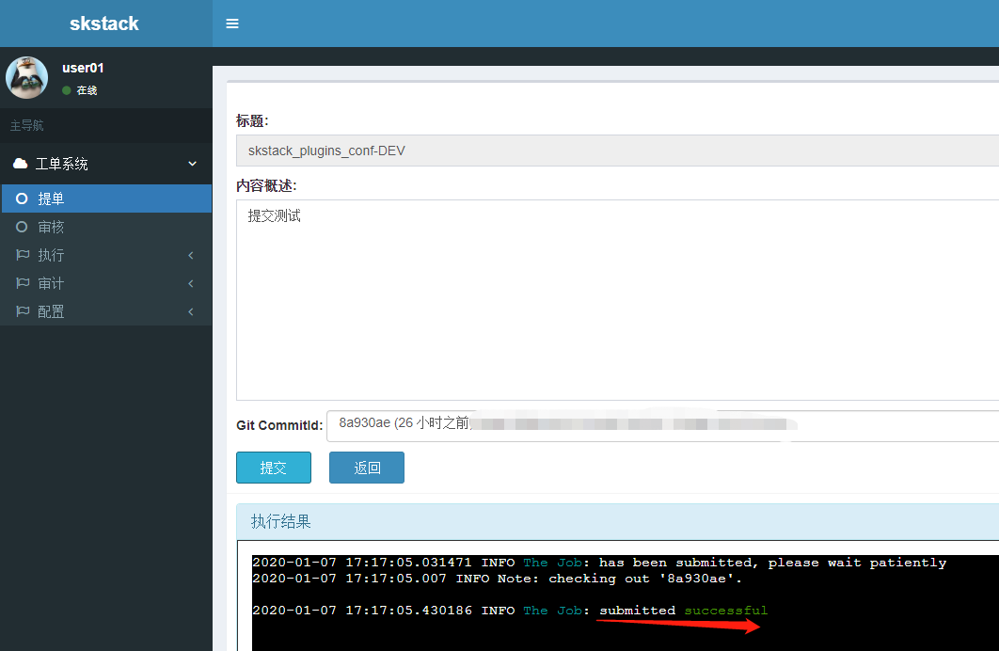
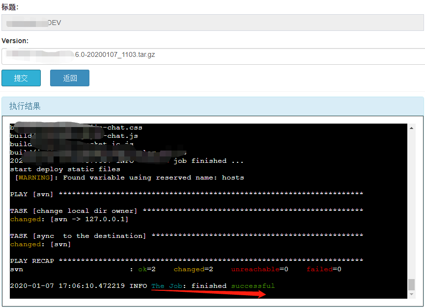
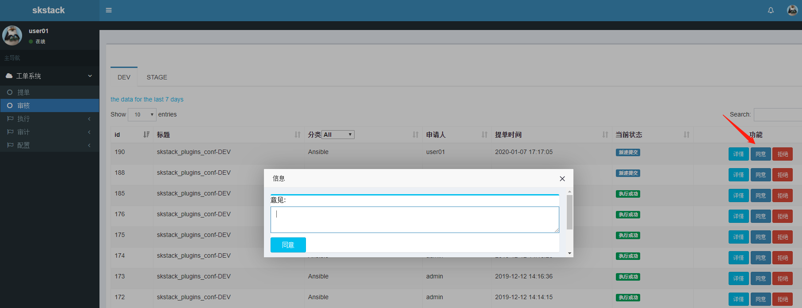

2. 工单系统¶
请先参考快速入门手册，后续补充该章节内容
2.1. 原理¶
详见快速入门手册概述部分
2.2. 管理员配置手册¶
详见快速入门手册demo章节
2.2.1. 基础配置¶
环境分类：如PROD表示生产环境，STAGE表示准生产环境，激活的工单应该归属其中一个环境分类，用户提单的时候可以在提单页面该环境标签下找到相应的工单
用途分类：为每个类型的项目单独创建一个分类，比如docker项目创建创建DeployDocker分类；git静态文件项目创建DeployGit分类
2.2.2. 配置中心¶
官方插件配置中心使用ansible服务器做配置任务管理
原则上只要配置中心支持skstack web通过 ssh登录，并执行上面的命令或脚本，就可以注册到skstack
参考 示例快速入门配置中心.
2.2.3. 变量配置¶
每定义一个任务工单，可以传递外部可选变量（用户可选）、内部自定义变量（对用户不可见）、系统内置变量（用户不可见）给工单
2.2.3.1. 可选变量¶
通过变量注册的方式定义，通过外部脚本或者管理员定义。格式为list ，如 [“host1”,”host2”,”host3”]
脚本获取，通过变量获取脚本动态获取可选变量。 示例docker发布插件项目变量.
管理员定义，管理员可以定义一个变量并提供一组参数给用户选择。 实例docker发布插件执行模式变量.
2.2.3.2. 内置变量¶
新增工单时编辑内部自定义变量
格式为dict 如{“GitProjName”:”app01”} key为变量名，value为值
内部变量主要用于静态变量，不会动态更新，默认可为空，工单配置管理员可以根据需求进行设置。
2.2.3.3. 系统变量¶
目前skstack只有如下系统变量可使用：
sk__name 本工单名称
sk__env 本工单管理环境名称
注解
内置变量以”sk__”开头（这里有两个下划线），是skstack系统内置变量 ，便于不同项目相同类型的工单进行快速配置。
2.2.3.4. 变量传递¶
内部变量和外部变量都通过”{变量名}” 传递给任务脚本；
如 python main_deploy_git.py -e prod -g “{GitProjName}” -i “{AnsibleHosts}”
2.2.4. 工单配置¶
工单名字：工单名可以通过内置变量{sk__name}变量传递给前置任务、主任务、后置任务脚本
项目描述：改工单所发布的项目进行简要描述，方便提单用户通过帮助按钮阅读
提单权限用户：选择具有提单权限的用户组，需要先到用户管理界面添加相关用户组
项目环境：关联的项目环境可以通过{sk__env}变量传递给前置任务、主任务、后置任务脚本，不同环境下的工单，会显示在对应的环境分类标签下
项目分类：可以根据不同项目类型自定义分类
是否激活工单：激活 #未激活工单，提单用户无法看到
内置变量：管理员可以自定义内置变量传递给脚本使用，参考变量配置章节
可选参数组：一个工单可以关联一个参数组，一个参数组可以关联多个可配置变量，在用户提单的时候，用户可以选择关联参数组中关联的变量参数
前置任务：提单的时候会执行的任务，一般用在审核之前或主任务执行之前做提前检查任务和预配置任务，可以留空
主任务：一般配置本工单主要执行的任务脚本
后置任务：主任务执行完成后，执行的脚本，比如通知任务，可以留空
是否开启审核：开启审核，后需要关联审核流程
审核流程：关联审核流程，配置可参考用户系统，审核流程配置环节
是否开启定时任务：开启定时任务后，用户提单时可以选择任务自动执行的时间，若开启了审核 需要审核以后 才会加入到自动执行任务队列，，需要通过审计》后台任务页面查看执行结果
是否开启后台执行选择按钮：开启后，用户提交任务后 ，任务会在后台执行，需要通过审计》后台任务页面查看执行结果
是否开启批准后自动执行选择按钮：开启后，审核通过会自动后台执行任务，任务执行结果通过审计》后台任务页面查询
是否开启任务锁：开启后，同一个环境下的同一个命名的工单，只能提交一次，必须在工单完成后（工单任务状态显示为成功、失败、撤销、拒绝时） ，才能创建新的同名工单
配置中心：默认配置中心和skstack web系统在同一台服务器，若使用其他配置中心，请在此处管理。一般一个环境或者一个数据中心单独一个配置中心
是否转为模板：激活模板后，该工单用户不可见，管理员可以从模板页面复制工单，以简化同类型工单配置。
2.3. 用户使用手册¶
2.3.1. 提单¶
图1
注解
提交成功后显示submited successful，表示提交成功，需要审核通过后才能进入执行页面执行任务。
图2
注解
提交成功后显示finished successful表示发布成功
2.3.2. 审核¶
由审核人员使用，工单开启审核后，需要通过审核流程中所定义审核流程才能执行。拒绝必须填写拒绝理由，同意可以不填 意见，直接点击同意按钮 进入审核页面如下：

点击同意后：拒绝必须给出拒绝理由，同意可以不用填意见
查看详情

2.3.4. 审计¶
这里记录所有工单执行历史，具有访问该菜单权限的用户，可以查看所有执行记录，包含其他用户的执行记录，以便于进行历史版本查看

注解
历史记录审计页面当前所有提交记录都记录在前台任务页面，后台任务模块暂未release。
2.3.5. 状态码说明¶
- 前台任务和后台任务共用状态码如下
(str(0), “新建提交”), (str(1), “l1审核通过”), (str(2), “l1审核拒绝”), (str(3), “执行成功”), (str(4), “执行失败”), (str(5), “l2审核通过”), (str(6), “l2审核拒绝”), (str(7), “l3审核通过”), (str(8), “l3审核拒绝”), (str(9), “撤销”),
后台任务专用状态码如下： (str(“CREATED”), “后台任务已创建”), (str(“REVOKED”), “后台任务已撤销”), (str(“WAITING”), “后台任务等待执行”), (str(“SUCCESS”), “后台任务执行成功”), (str(“FAILURE”), “后台任务执行失败”), (str(“DONE”), “后台任务已执行完毕，并已清理任务队列结果数据库数据”),
注解
若工单开启审核功能，前台任务审核通过后，审核人员还可以反悔变更拒绝状态；若是定时任务，审核人员通过审核后 系统会自动创建任务队列 无法再次变更审核状态，若有问题，只能通知提单用户或者管理员撤销执行。